Link to webpage: https://cal-cs184-student.github.io/hw-webpages-Rin-Kagamine/hw2/
Link to GitHub website repository: https://github.com/cal-cs184-student/hw-webpages-Rin-Kagamine
Link to GitHub code repository: https://github.com/cal-cs184-student/hw2-meshedit-oliveira2
In this homework, I implemented both Bezier curve / surface evaluation and several local mesh editing operations on triangle meshes. On the Bezier side, I used de Casteljau subdivision to evaluate curves and surfaces. On the mesh side, I implemented area-weighted vertex normals, edge flip, edge split, and Loop subdivision using the half-edge data structure.
My main takeaway from this homework is that I now have a much more concrete understanding of geometry processing through implementation rather than just through lecture diagrams. In particular, I became much more comfortable working with the half-edge data structure: after repeatedly tracing next(), twin(), and the local face/vertex neighborhoods, the connectivity of a mesh feels much less abstract than before.
Another thing that became very clear to me is that these local mesh operations are different on the surface, but in practice they follow a very similar pattern. Whether it is flipping an edge, splitting an edge, or thinking ahead to something like edge collapse, the real work is always to identify the local neighborhood carefully and then update the connectivity in a consistent way. After doing this homework, I feel that I have a much better sense of how these operations are actually carried out.
A Bezier curve can also be written in explicit polynomial form, which I noted down separately in my handwritten notes below.
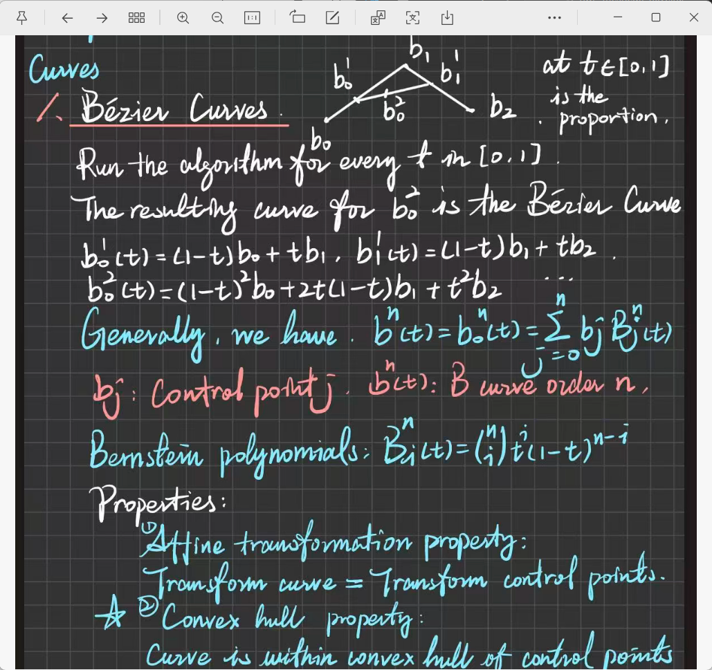
However, in this assignment I evaluated the curve using de Casteljau’s algorithm instead of directly using the explicit formula. The main idea of de Casteljau’s algorithm is to repeatedly linearly interpolate between adjacent control points at a given parameter \(t\). One subdivision step replaces a list of points \(p_0, p_1, \dots, p_n\) with a shorter list \((1-t)p_0+tp_1, (1-t)p_1+tp_2, \dots, (1-t)p_{n-1}+tp_n\). Repeating this process reduces the control polygon level by level until only one point remains, which is exactly the point on the Bezier curve at parameter \(t\).
In my implementation, I performed one subdivision level at a time and generated the next layer of intermediate
control points from the current one. This matches the GUI design of the assignment: pressing E
steps through the intermediate levels, while toggling C displays the final Bezier curve.
I used this process to verify that the intermediate points moved correctly and that the final evaluated point
stayed on the curve.
For the screenshots below, I created my own Bezier curve with 6 control points and stepped through the full evaluation from the original control polygon down to the final point.
|
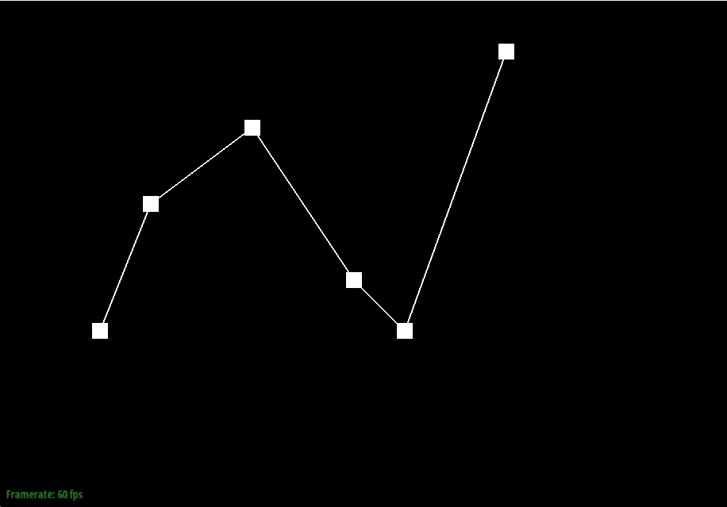 |
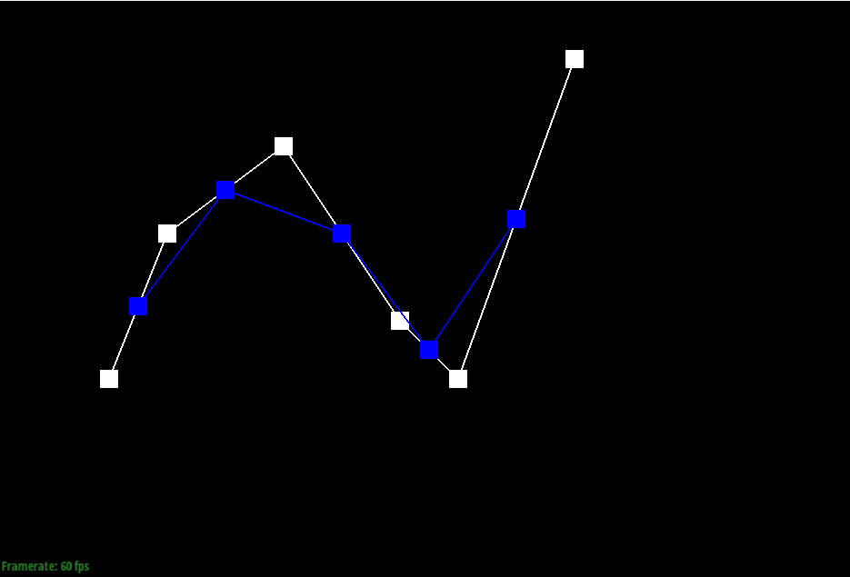 |
|
|
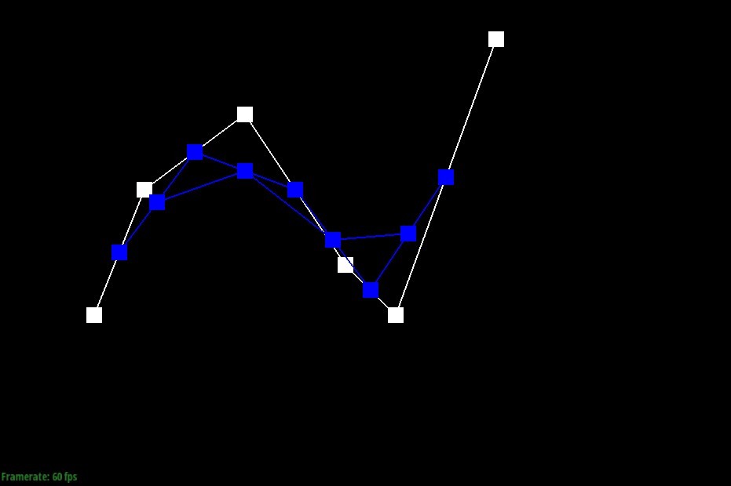 |
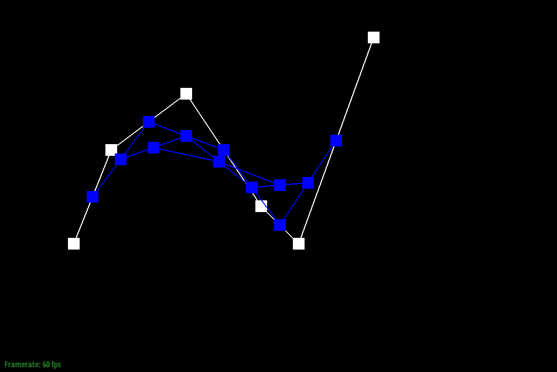 |
|
|
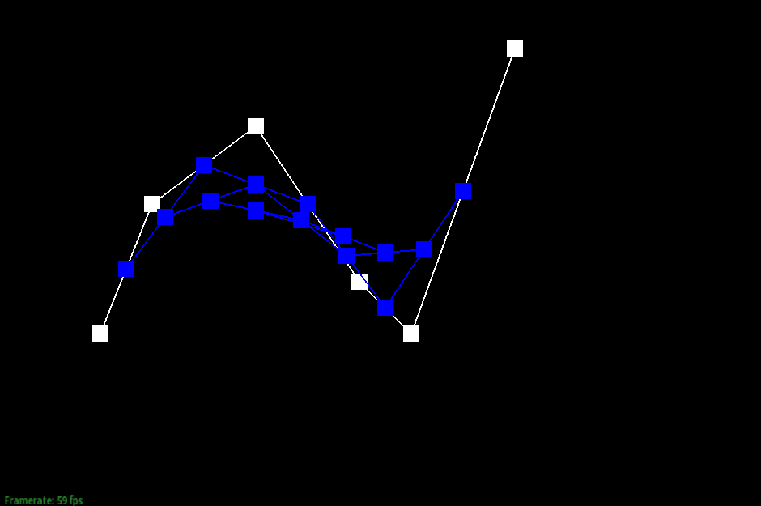 |
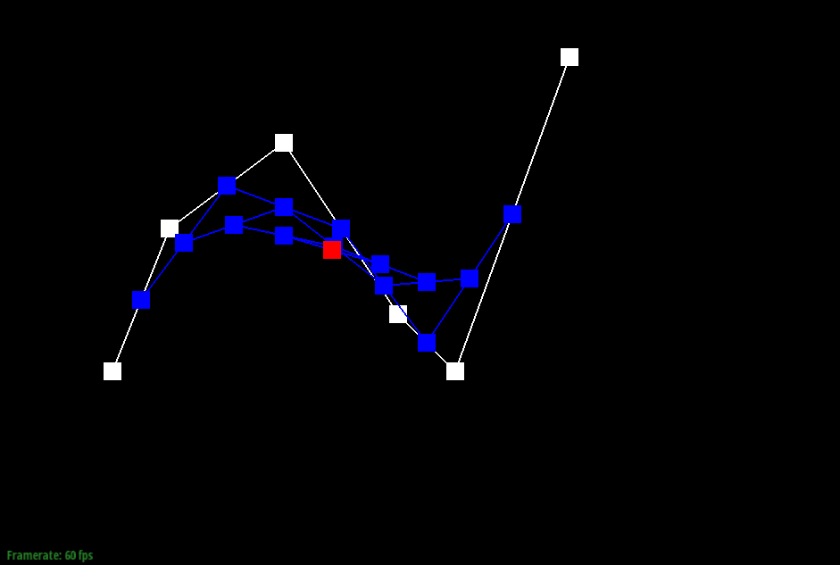 |
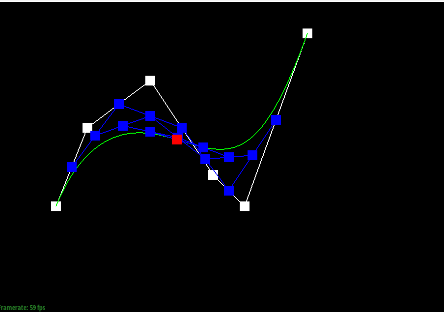 |
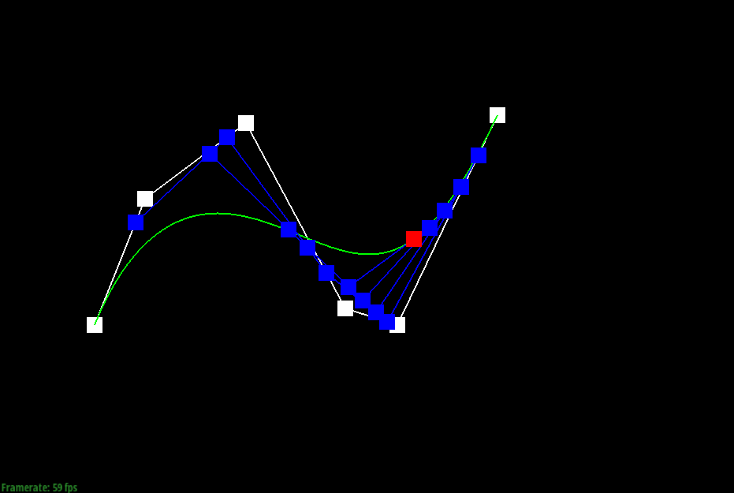
To extend de Casteljau’s algorithm from curves to Bezier surfaces, I used the separable 1D construction from the specification. The control points form an \(n \times n\) grid. I first treat each row of control points as a Bezier curve parameterized by \(u\). Evaluating every row at \(u\) produces a new set of points, one from each row. These points are then treated as the control points of another Bezier curve parameterized by \(v\). Evaluating this second curve at \(v\) gives the final point on the Bezier surface.
Conceptually, this is the same interpolation idea as in Part 1, but applied twice: first across one direction of the control-point grid, then across the other. This separable construction makes the surface evaluation easy to organize and directly reuses the 1D de Casteljau procedure.
In my implementation, I first evaluated one subdivision step for a 1D list of 3D control points. Then I repeatedly applied this process until only one 3D point remained for a row. Finally, I evaluated every row at \(u\), collected the resulting row points, and evaluated those points at \(v\) to obtain the final surface point.
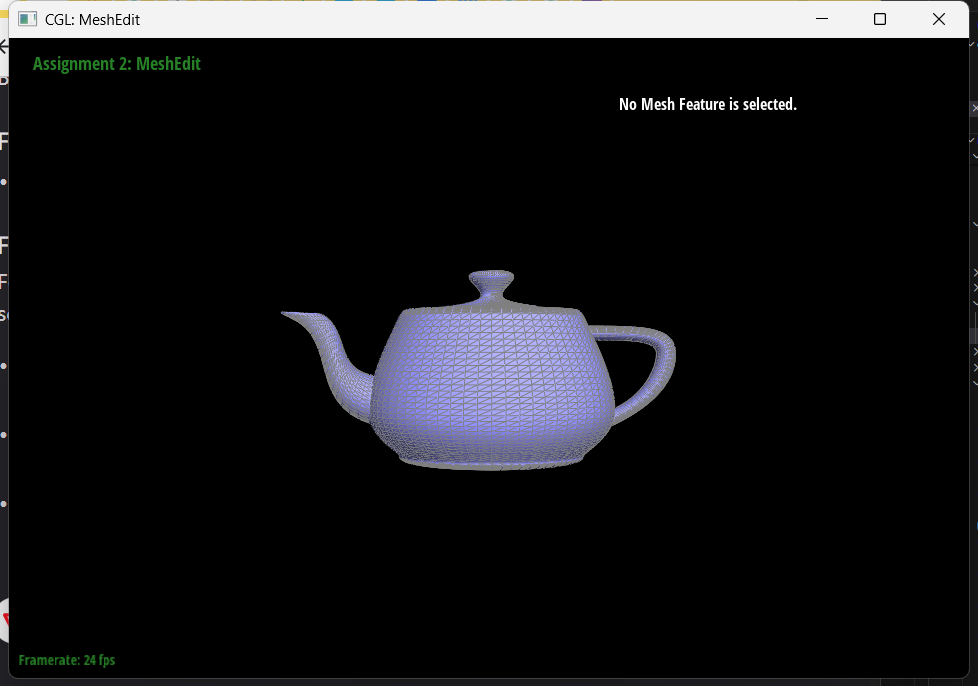
bez/teapot.bez.
I implemented area-weighted vertex normals by iterating over all faces incident to a given vertex using the
half-edge structure. Starting from one outgoing half-edge of the vertex, I traversed the one-ring neighborhood
with the standard pattern twin()->next(). For each non-boundary face, I retrieved its three vertex
positions from the local half-edge cycle and computed a face normal using the cross product of two triangle edges.
Instead of averaging unit face normals directly, I accumulated the unnormalized cross products. This naturally weights each contribution by triangle area, so larger neighboring triangles contribute more to the final vertex normal than smaller ones. After summing these area-weighted face normals, I normalized the result to produce the final unit normal vector at the vertex.
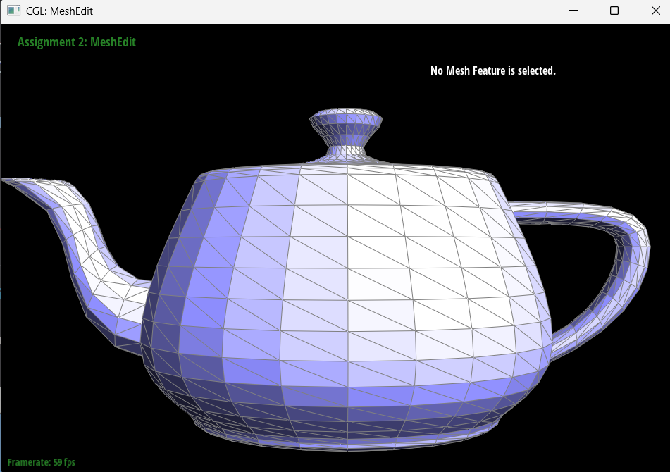
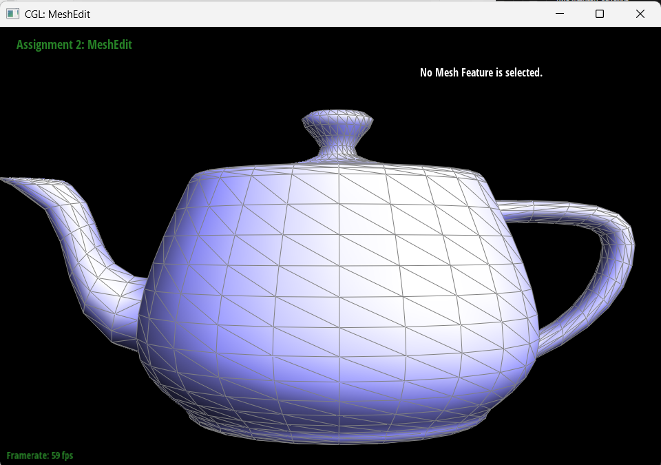
Q.I implemented edge flip as a purely local connectivity update on the two triangles adjacent to the selected edge. Before coding, I drew a detailed diagram of the local neighborhood and explicitly labeled all affected halfedges, vertices, edges, and faces before and after the flip. This made it much easier to reason carefully about every pointer update.
The key idea is that an edge flip does not create or delete any mesh elements. Instead, it only changes how the
existing halfedges are connected. After identifying the six halfedges of the two incident triangles, I reassigned
their next, twin, vertex, edge, and face pointers
to match the flipped configuration. I also updated the representative halfedge pointers stored in the affected
vertices, edges, and faces.
One useful conceptual point was that the halfedge pointer stored in a vertex, edge, or face is only an entry point
for traversal. For example, an edge stores only one of its two halfedges, since the other can always be reached
through twin(). The actual orientation and connectivity of the mesh are determined by the full set of
halfedge relationships rather than by those representative pointers alone.
Because I worked out the entire local pointer structure on iPad first, the implementation itself went relatively smoothly, and I did not run into major debugging issues in this part.
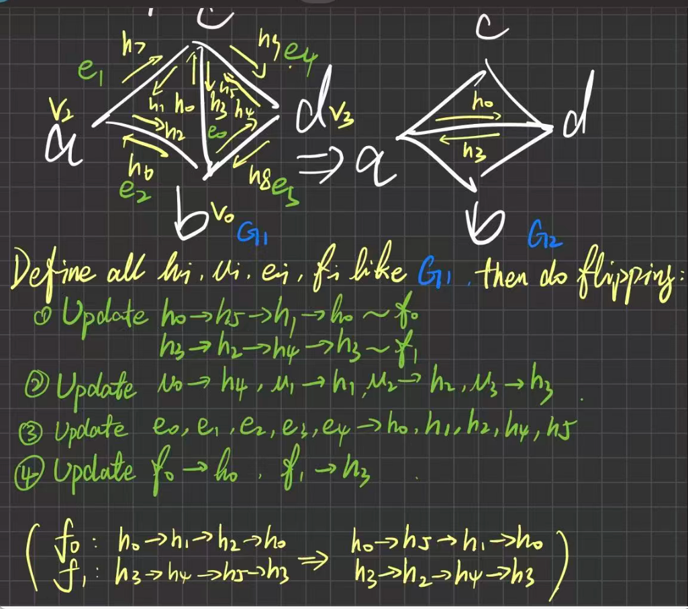
One observation is that flipping certain interior edges can produce a visually degenerate configuration: the new diagonal may appear to “disappear” in the current view, likely because it becomes nearly aligned with other edges in screen space or because the two resulting triangles are extremely skinny. I treated this as a geometric / projection effect rather than a pointer bug, since the mesh remained connected and the assignment only requires special-casing boundary edges.
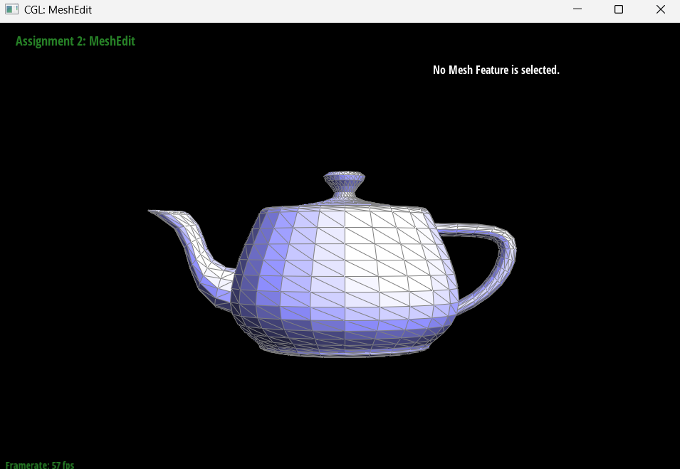
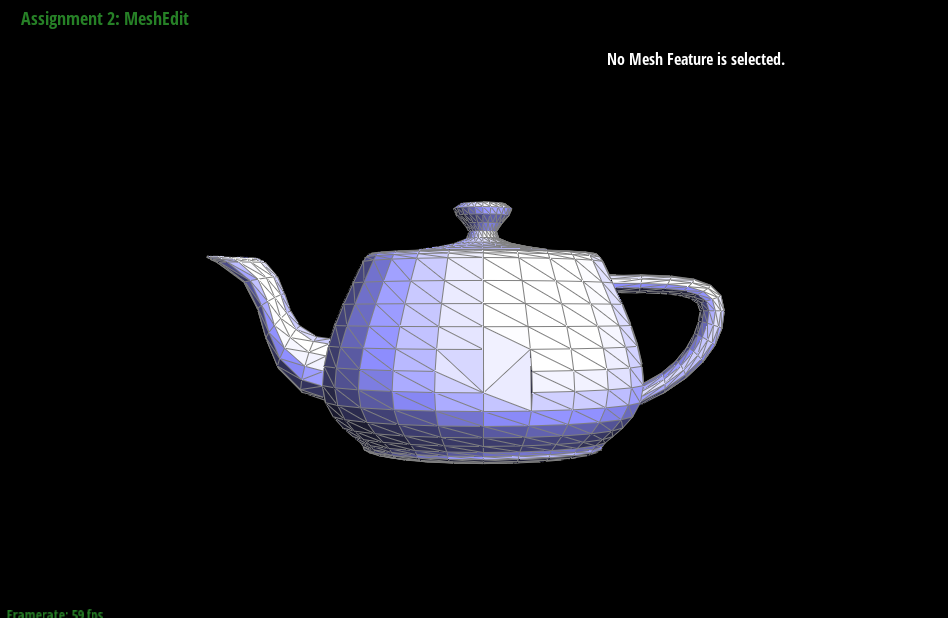
I implemented edge split as a local remeshing operation on the two triangles adjacent to a selected interior edge. Compared with edge flip, the main additional challenge is that edge split creates new mesh elements rather than only rewiring existing ones. In my implementation, splitting one interior edge inserts a new vertex at the midpoint of the original edge, creates the additional edges, faces, and halfedges needed by the new local configuration, and then reconnects all affected elements so that the original two triangles are replaced by four smaller triangles.
As in Part 4, I found it very helpful to draw the full local neighborhood on paper before coding. I labeled the old halfedges, vertices, edges, and faces, decided in advance which existing elements would be reused, and then marked which new elements had to be created. This made it much easier to track the larger number of pointers involved in the split operation. After that, I updated the local halfedge connectivity and also reset the representative halfedge pointers stored in the affected vertices, edges, and faces.
I placed the new vertex at the midpoint of the selected edge, as required by the specification. I also made sure that the halfedge stored in the new vertex points along the original split edge rather than one of the newly added connecting edges. One useful implementation habit throughout this part was to separate the work into two stages: first collect and label all local elements, then assign all new pointer relationships in one pass.
During testing, I noticed that after repeated local split and flip operations, some edges can look visually overlapped from the current camera view. My interpretation is that the edge has not disappeared, but rather that the new local configuration makes a few lines appear very close to each other in projection. As long as the mesh remains connected and further local operations still behave correctly, I treated this as a geometric viewing effect rather than a topological failure.
My debugging process for this part was much smoother than I initially expected, mainly because I worked out the full
pointer update on paper before implementing it. The most useful “debugging trick” was therefore not a special tool,
but careful local bookkeeping: drawing the post-split face cycles and checking each halfedge’s
next, twin, vertex, edge, and face assignment one by one. However, I did draw this diagram 3 times because of the orientation problem.
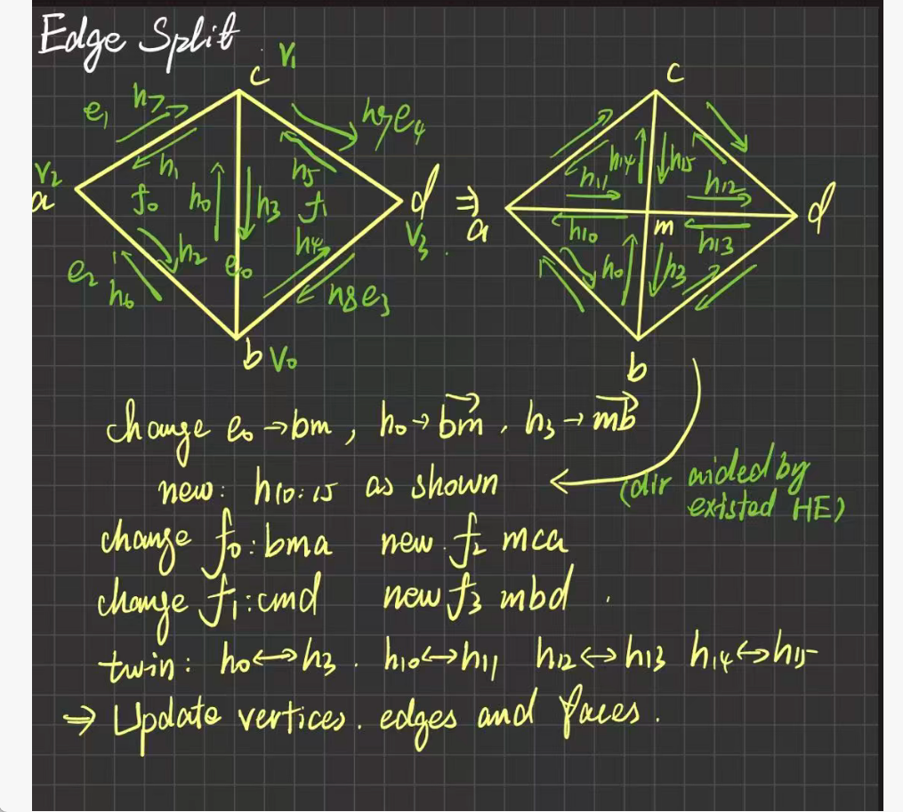
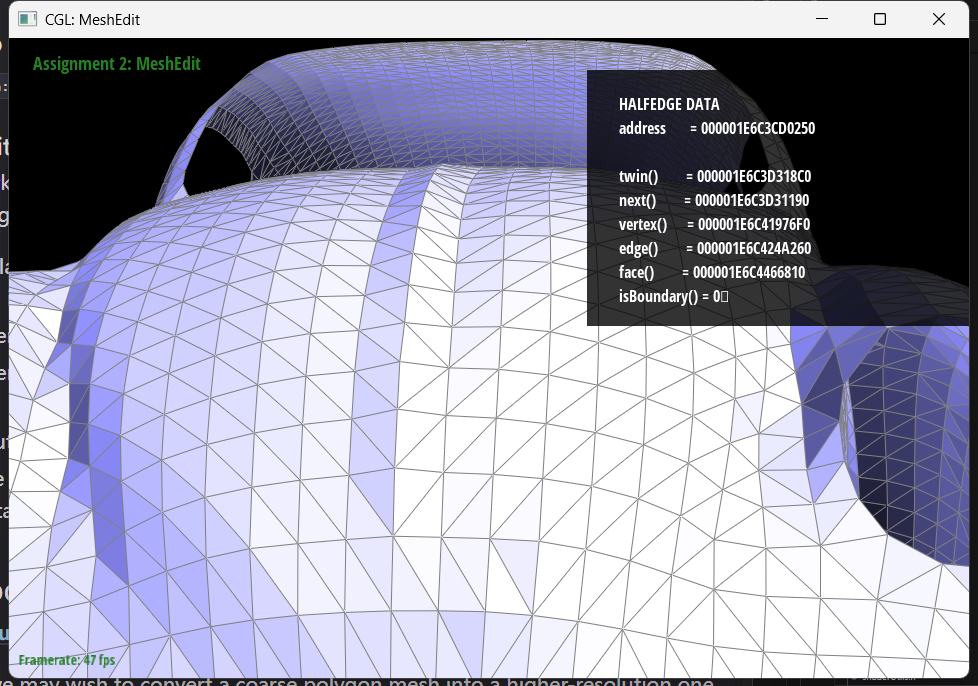
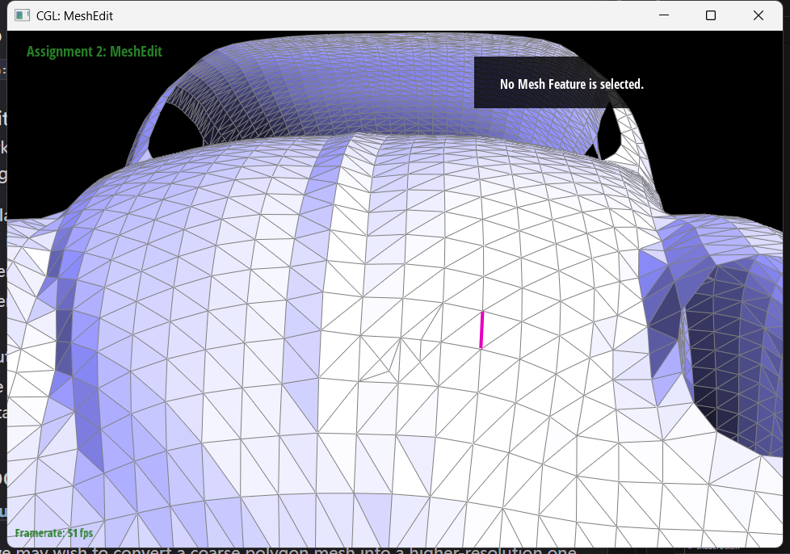
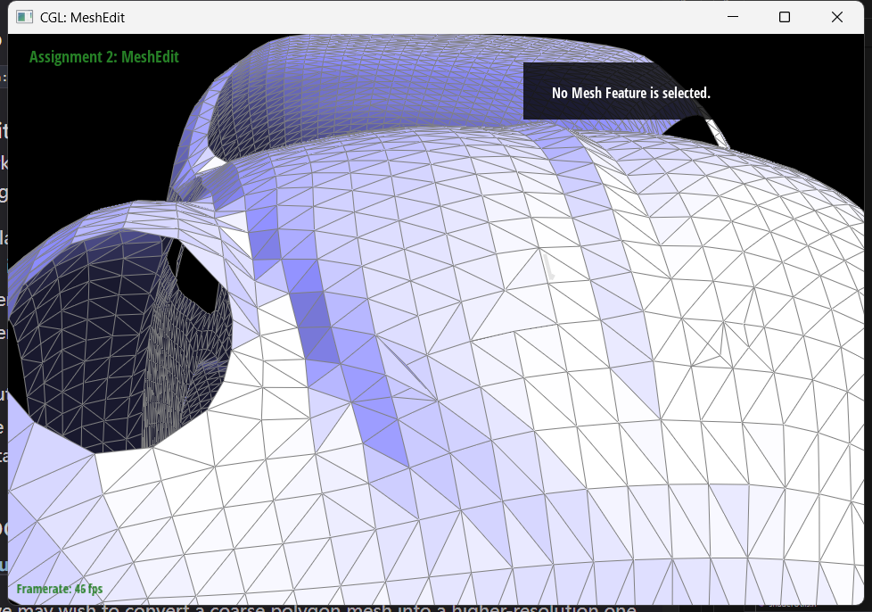
For the base implementation, I ignored boundary-edge split requests. I later tested boundary cases separately by checking whether a selected edge was actually on the boundary, since an edge can lie close to the boundary or even connect boundary vertices without itself being a boundary edge.
For the extra credit portion, I also implemented support for splitting boundary edges. In this case, only the non-boundary triangle adjacent to the selected edge is split into two triangles, while the corresponding segment on the virtual boundary face is also divided into two boundary edges. This required updating both the local interior face connectivity and the boundary loop connectivity consistently.
One thing I learned while testing is that an edge can lie very close to the mesh boundary, or even connect
boundary vertices, without itself being a boundary edge. The most reliable way to distinguish the two cases was
to inspect the edge data directly through isBoundary() in the GUI.
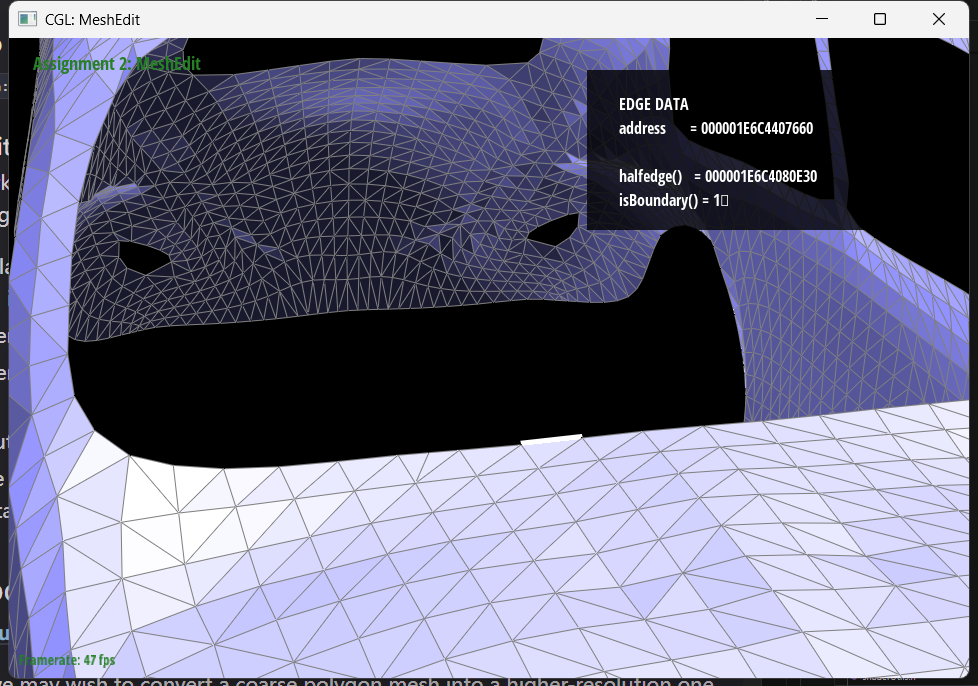
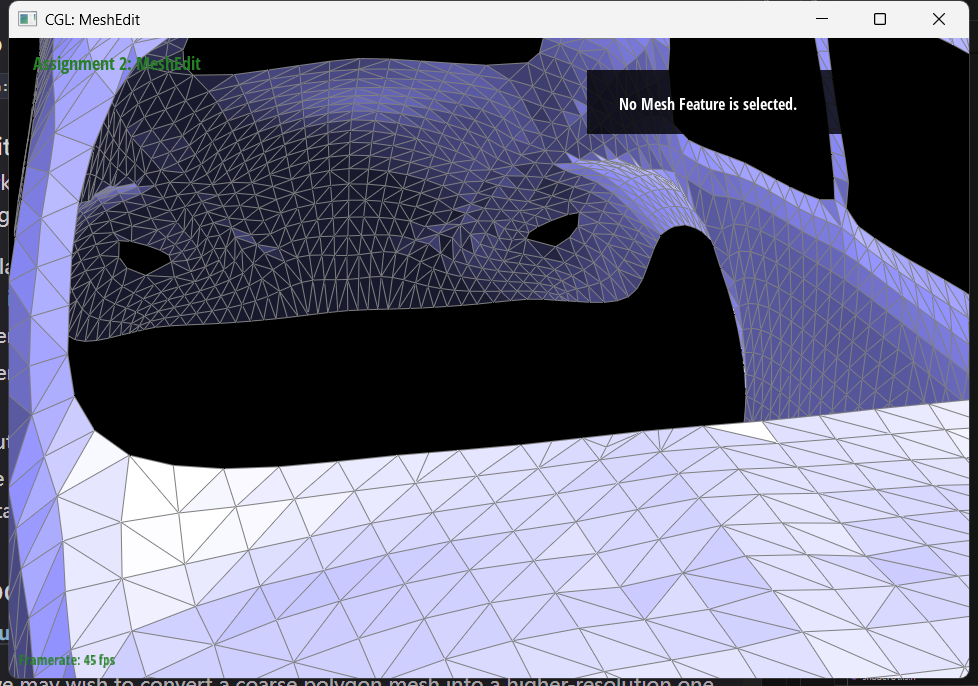
I implemented Loop subdivision in three stages. First, I computed all updated vertex positions and edge midpoint
positions on the original mesh and stored them in Vertex::newPosition and Edge::newPosition.
I did this before changing the mesh connectivity, since all subdivision weights should be computed from the coarse
mesh rather than from an already subdivided one.
For every original vertex \(v\) with degree \(n\) (i.e., \(n\) one-ring neighbors \(v_i\)),
the updated position is a weighted average of itself and its one-ring neighbors:
\[
\mathbf{v}_{new} = (1-n\beta)\mathbf{v} + \beta\sum_{i=1}^{n}\mathbf{v}_i,
\]
where
\[
\beta =
\begin{cases}
\frac{3}{16}, & n=3,\\[4pt]
\frac{3}{8n}, & n>3.
\end{cases}
\]
I stored these target positions in Vertex::newPosition and Edge::newPosition before any connectivity changes,
so all weights are computed from the coarse mesh rather than from a partially subdivided mesh.
Next, I subdivided the mesh topologically by splitting every original edge, marking new and old elements with
isNew, and then flipping every new non-boundary edge that connected one old vertex and one new vertex.
Finally, after all connectivity changes were finished, I copied the stored positions back into
Vertex::position.
The most useful implementation trick for this part was to separate geometry from topology: first compute all target positions, then do all splits and flips, and only at the end update the actual mesh positions. This made the logic much easier to keep track of and avoided mixing old and new geometry.
For the sharpness observation, I used the teapot. Before subdivision, the teapot has several visually sharp features, especially around the rim and the lid. After Loop subdivision, I found that the lid lost its sharpness the most noticeably: its silhouette became much smoother and more rounded. This makes sense because Loop subdivision repeatedly averages nearby vertex positions, so sharp local features are gradually smoothed out.
This smoothing effect can be reduced to some extent by pre-splitting edges near a sharp feature. Doing so makes the local triangulation more regular and gives the subdivision process more geometric support around the feature, which can help preserve its visual structure a little better. And you can add some non-symmetry parts. However, Loop subdivision is still inherently a smoothing scheme, so pre-splitting only mitigates the loss of sharpness rather than fully preserving a perfectly sharp edge.
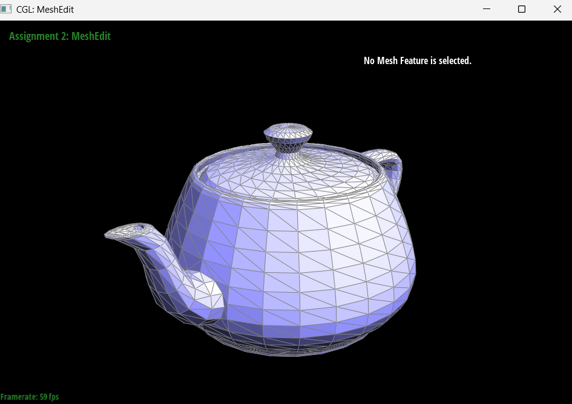
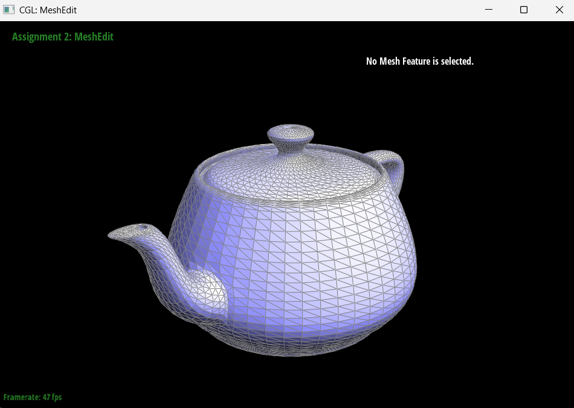
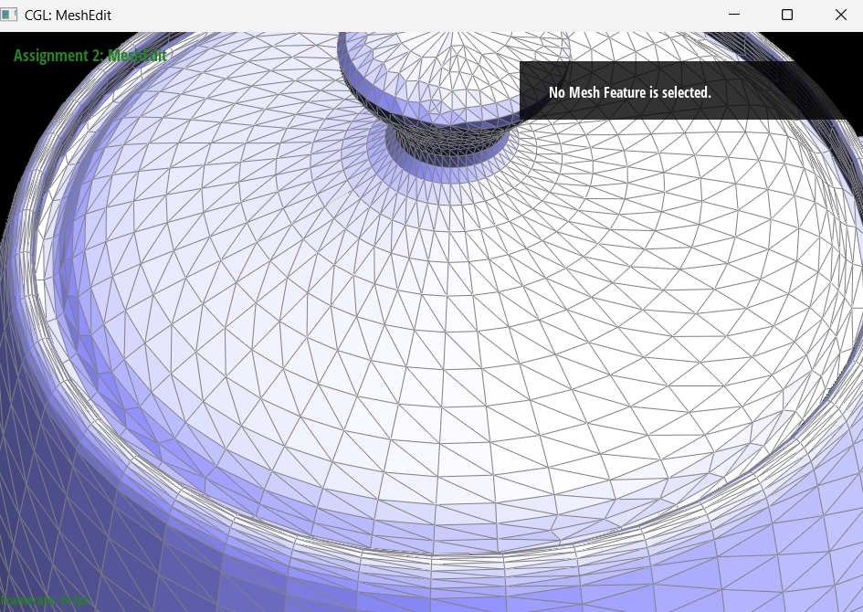
For dae/cube.dae, I observed that repeated Loop subdivision makes the cube slightly asymmetric. My
interpretation is that the cube itself is geometrically symmetric, but its triangulation is not: the diagonals on
the faces introduce an asymmetric connectivity pattern. Since Loop subdivision depends on mesh connectivity, that
asymmetry is propagated through repeated subdivision.
To reduce this effect, I pre-processed the cube by performing edge splits so that each face gained an extra edge and the face triangulation became more balanced, visually resembling a cross pattern on each face. After this preprocessing, the subdivided cube became much more symmetric, because the connectivity on different faces was more uniform before subdivision began.
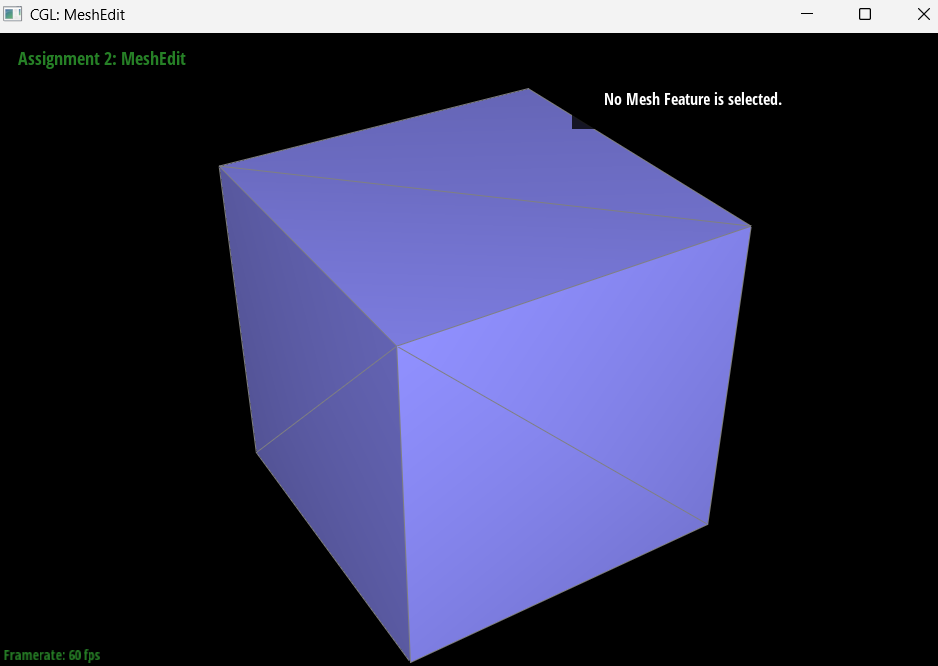
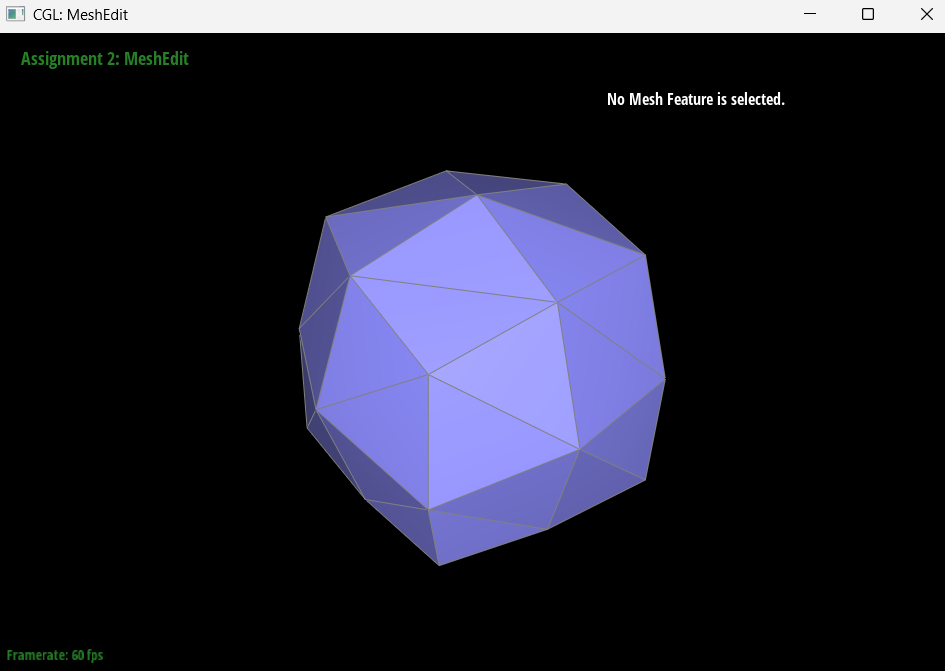
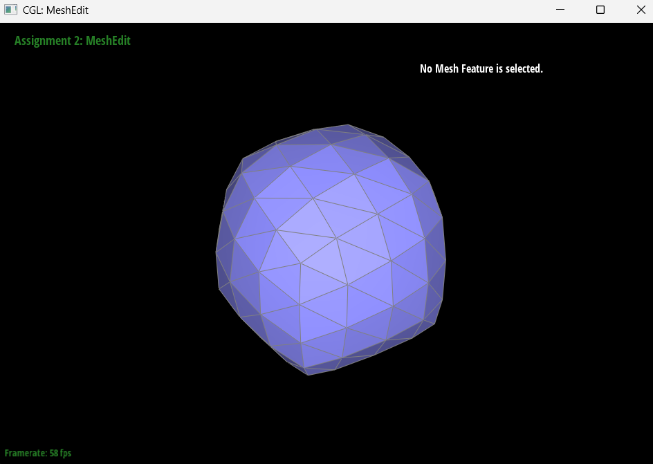
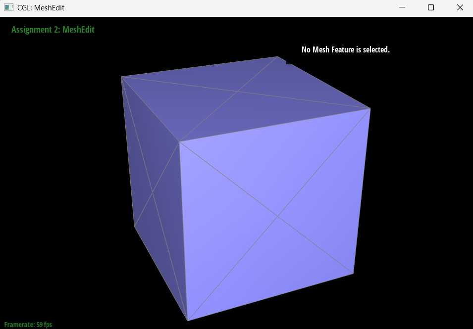
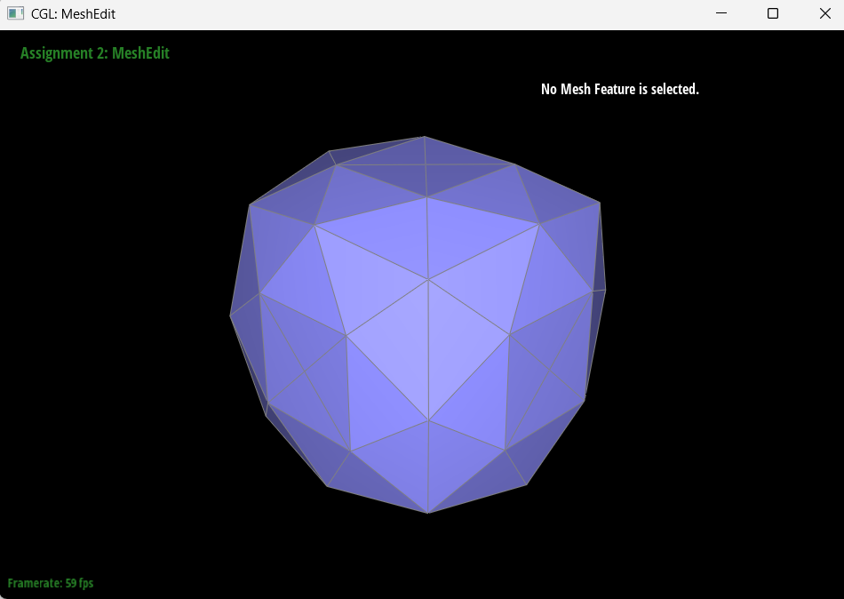
For the extra credit extension, I also supported meshes with boundary. For old boundary vertices, I used the boundary rule \( \frac{3}{4}v + \frac{1}{8}v_{\mathrm{prev}} + \frac{1}{8}v_{\mathrm{next}} \), and for new vertices inserted on boundary edges, I used the midpoint rule \( \frac{1}{2}(A+B) \). I also allowed boundary edges to be split during subdivision, while still avoiding flips on boundary edges.
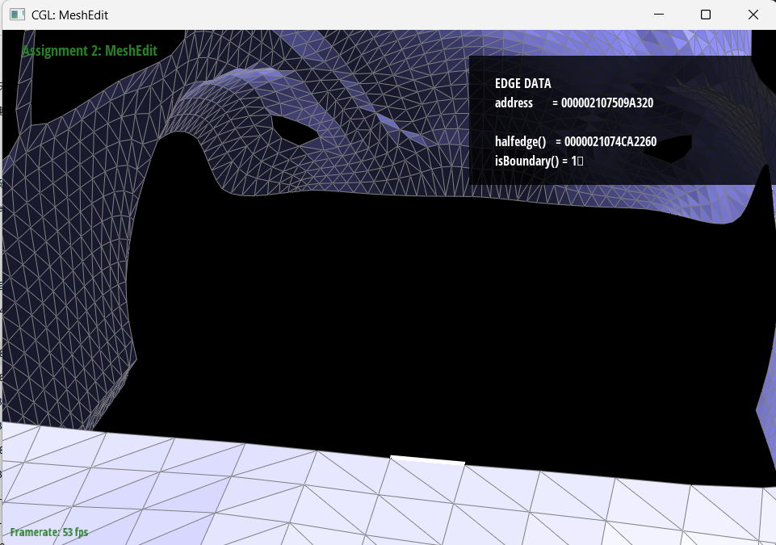
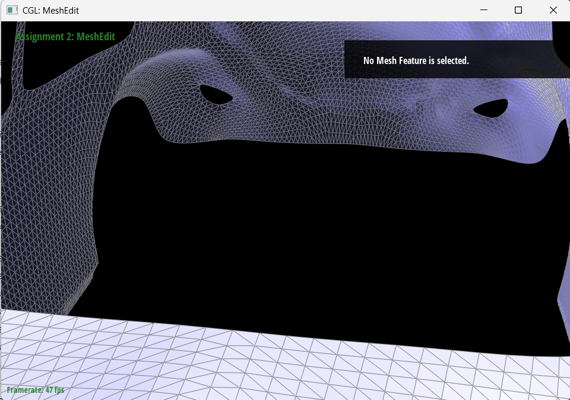
For an additional subdivision extra credit, I also implemented \(\sqrt{3}\)-subdivision for closed triangle meshes. Unlike Loop subdivision, which performs a 4-1 split by inserting edge midpoints, this scheme inserts one new vertex at the center of each face and then rebuilds the mesh connectivity from those face-center vertices.
In my implementation, I first computed the updated positions of all original vertices using the \(\sqrt{3}\)-subdivision weight \[ \alpha_n = \frac{4 - 2\cos(2\pi/n)}{9}, \] where \(n\) is the degree of the old vertex. Each old vertex was updated as a weighted average of its original position and its one-ring neighbors. Then, for every triangle face, I inserted one new vertex at the triangle center. Finally, instead of performing local split and flip operations, I rebuilt the refined mesh globally: for each old vertex, I traversed its incident faces in order and connected that old vertex to the centers of consecutive neighboring faces, producing the new triangulation.
The main debugging issue in this part was triangle orientation. In my first implementation, the order of the face-center vertices around each old vertex was reversed, so after one subdivision the mesh normals flipped and the surface appeared dark. After swapping the order of the two consecutive face centers when constructing each new triangle, the orientation became consistent and repeated subdivision behaved correctly.
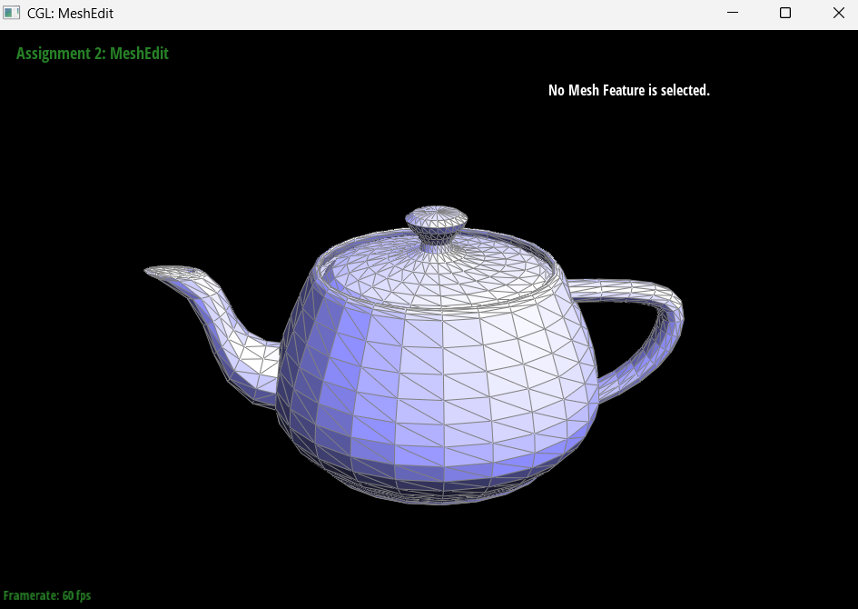
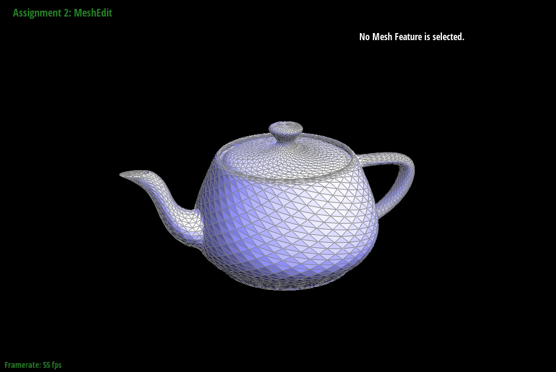
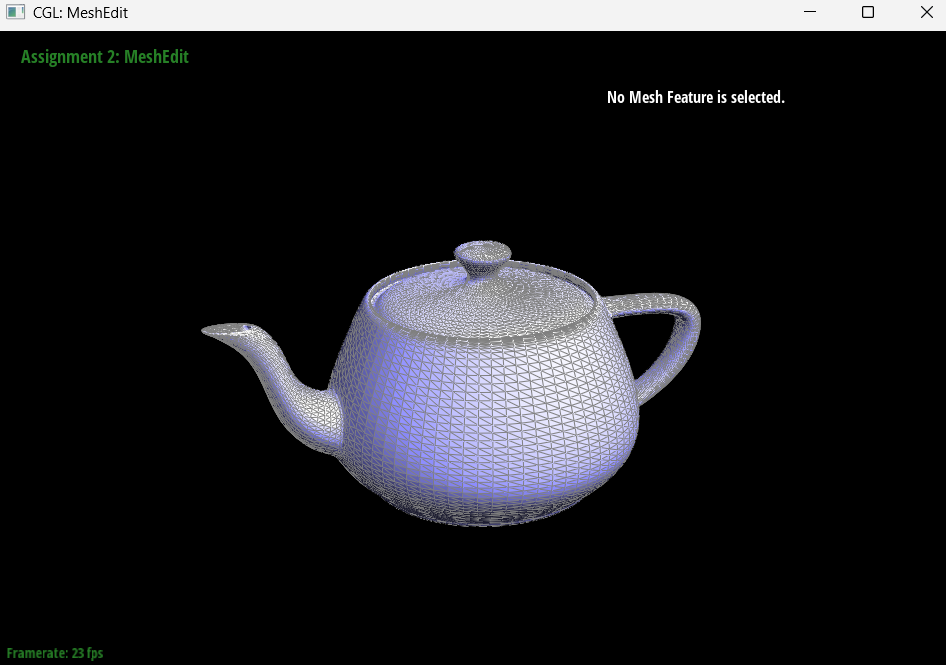
Compared with Loop subdivision, this scheme produces a different refinement pattern because it inserts one face-center vertex per triangle and rebuilds the mesh globally from those centers. It was a useful extra exercise because it made me think more carefully about mesh orientation and about the difference between local half-edge updates and rebuilding connectivity from a higher-level polygon list.
I tried to make a Kagamine Rin-inspired mesh, although the overall result is only moderate. It is at ./docs/art_competition_patched.dae. The first image shows the front view of the face, and the second image shows the signature bow.
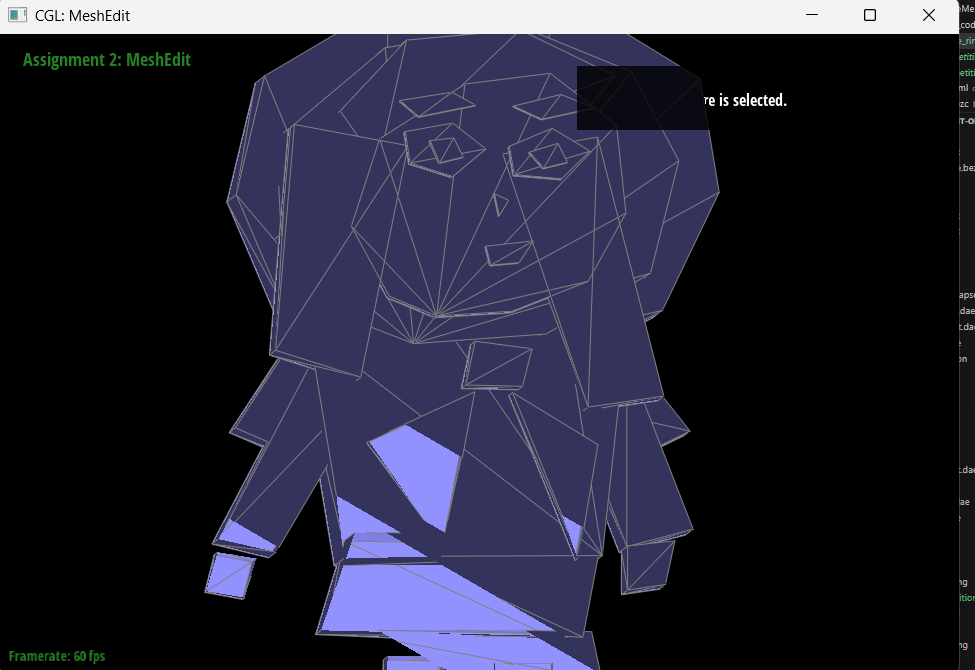
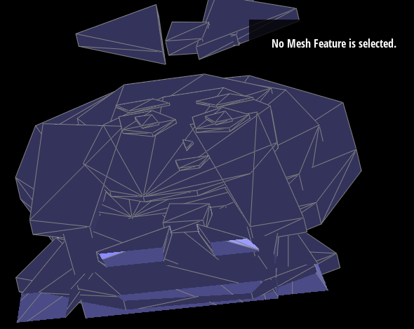